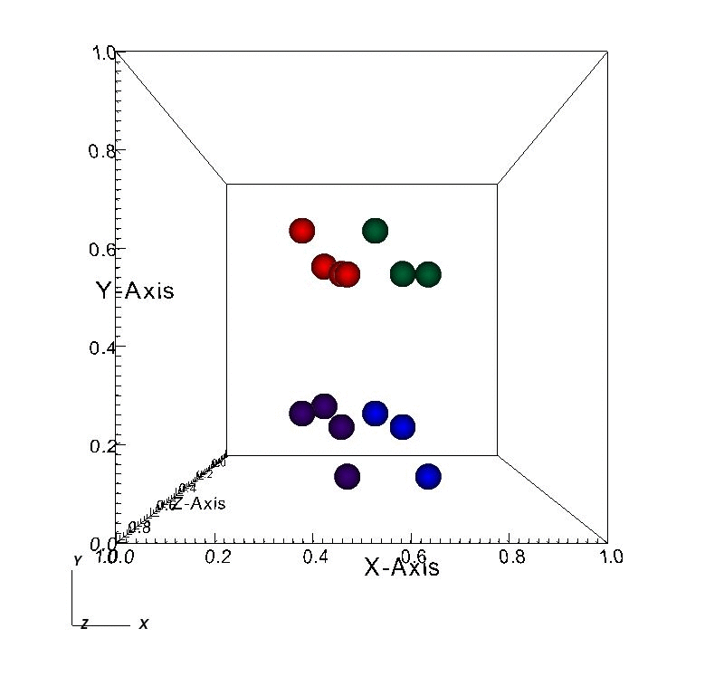
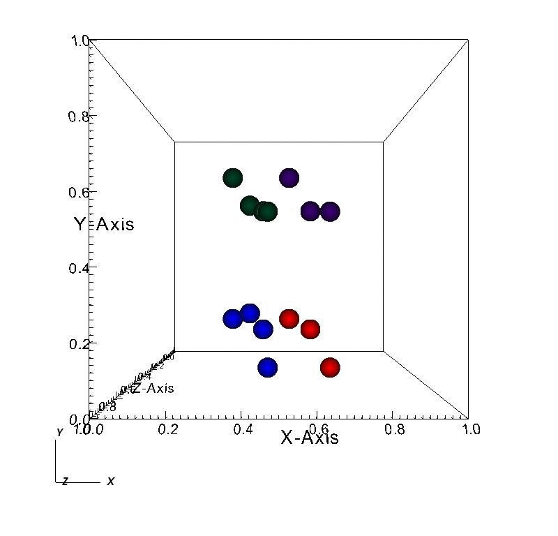

Parallel communication for particles
The domain is divided into four partitions, the color of the particles are decided by their processor id
The test shows the motion of droplets will be preserved and send into the corresponding processor.
|  |  |
Parallel communication for field solver
The domain is divided into 8 partitions(2 X 2 X 2)
We can see boundary is handled well.
 |
 |